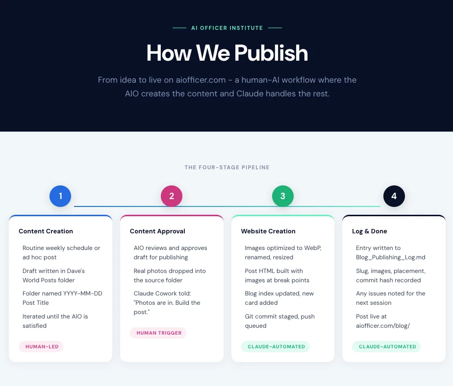
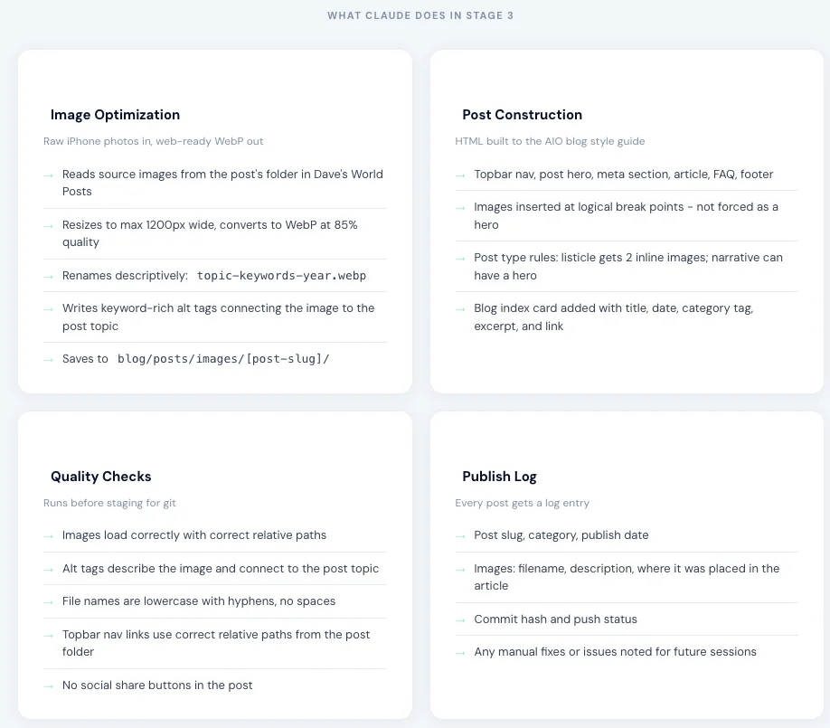
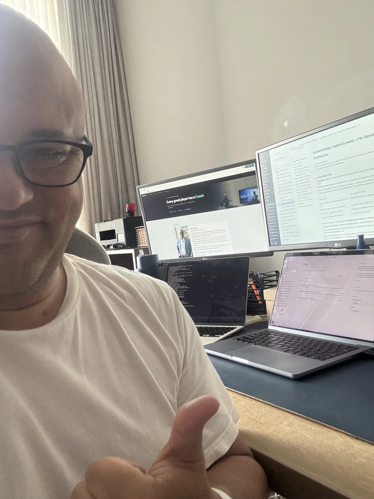

Quick Summary
- We are in the 50/50 era — half of every workflow is becoming AI. Most leaders were trained only to lead people.
- Skill #1: ABC — Always Be Cataloguing. Your AI is only as good as what you give it. Get your catalog in order first.
- Skill #2: Workflow Design — the ability to map how work flows through a system of humans and AI agents.
- The proof: caiocoach.com went from idea to live site in 4.5 hours, while running two businesses simultaneously.
The ShiftThe Job Got Bigger
Leadership used to be one thing: lead people.
You hired well. You built culture. You ran good meetings. You held people accountable. That was the job. A hundred percent of it.
That has changed.
That is not a prediction. It is happening now, in real companies, in real time. We wrote about the early signals of this shift in Using AI Was 2025. Leading AI Is 2026. — but the skill gap has only widened since.
But here is the problem. Most leaders only learned to lead people. Nobody taught them how to lead AI. Nobody taught them how to build a team where half the contributors do not have a pulse. And because of that, most organizations investing heavily in AI are getting almost nothing back.
Not because the tools don't work. Because nobody in the room knows how to lead them. The job got bigger. The skill set has not caught up.
The FrameworkTwo Skills. No One Is Teaching Them.
If you want to lead AI — not just use it — you need two capabilities. Neither of them is a technology skill. Both of them are leadership disciplines.
ABC — Always Be Cataloguing
Organize everything your AI team needs to work well: files, assets, brand voice, process docs, templates. If your AI can't find it, it doesn't exist.
Workflow Design
Map how work flows through a system of humans and AI agents. Who does what? In what order? What triggers the next step? This is the new org chart.
Build both of these and you are not just more productive. You are building a compounding advantage that is very hard for anyone behind you to close.
The First SkillABC: Always Be Cataloguing
Your AI is only as good as what you give it. If your files are scattered, your images unnamed, your brand voice locked inside your own head, your AI team is working blind. It will hallucinate. It will be generic. It will produce work that feels off, because it has nothing real to work from.
I preach this constantly. Catalog everything. Name your files with intention. Build style guides. Document your voice, your process, your standards.
And then I looked at my own image library.
That is the gap. Most leaders have knowledge they cannot transfer. Insight that lives only in their head. Systems that fall apart when they step away. If your AI cannot find it, it does not exist.
ABC is the precondition for everything else. Before you build a workflow, before you delegate a task, before you run an agent, you need to have your catalog in order. That means your brand assets, your tone of voice, your process documentation, your templates, your frameworks.
This is not optional. It is how you onboard your AI team. Skip it, and you are building on sand.
The Second SkillWorkflow Design Is the New Org Chart
The second skill is orchestration. Not prompting. Not experimenting with tools. Orchestration is the ability to design AI workflows for business outcomes — mapping how work flows through a system that includes both humans and AI.
Think about it the same way you think about your org chart. Who does what? In what order? What triggers the next step? Who is accountable for the output? When does a human need to be in the loop?
Those questions used to only apply to people. Now they apply to AI agents too. This is the capability we build in the AI Officer certification — specifically in the Agentic AI track.


The actual publishing pipeline — from idea to live site, AI handles execution at every stage.
When I built caiocoach.com, I was not running one conversation with one AI. I was running parallel threads inside a single project, each with clear instructions, each drawing from the same style guides and context files. One thread handled the site structure. One handled the content. One handled the coaching program pages. The site was pushed to GitHub and deployed live via Vercel automatically. I directed the work. My AI team executed it.
That is workflow design. It is the skill of knowing how to break a goal into components, assign each component to the right resource, and coordinate the output into something coherent.
Founders who learn this do not just get faster. They get to a different category of output entirely.
The Proof4.5 Hours
Here is what the caiocoach.com build actually looked like.
Coaching session ends at 12:30. I have a full afternoon. Three meetings. Payroll. A lesson to prep. The domain has been sitting unused for a year.

Multiple screens. Multiple threads. One director. This is what workflow design looks like from the inside.
ABC + workflow design = a different order of magnitude.
That result was not possible without ABC. I had my style guides ready. My brand voice documented. My process for building AIO content already structured and tested. My AI team had what it needed to work.
And it was not possible without workflow design. I did not hand one AI a vague request and hope. I mapped the build, ran parallel threads, and directed the output.
The creative generalist with these two skills is not 10% more productive. The leverage is a different order of magnitude entirely.
Your MoveThe Question Is Not Whether to Lead AI
The question is whether you will figure it out before your competitors do.
Eric and Julien asked the right questions in that coaching session. They were already thinking like AI leaders. They just did not have the framework yet.
ABC and workflow design are not tools. They are not software. They are leadership capabilities. And right now, they are rare.
The founders who build these skills first are not just more productive. They are building a compounding advantage that is very hard for anyone behind them to close. Your AI team is already waiting. The question is whether you know how to lead it.
Ready to Lead AI?
The AI Officer Institute exists to build the leadership capabilities the 50/50 era demands. If you want to move from AI user to AI leader — and see what ABC and workflow design look like inside a real operating system — earn your AI Officer Certification or join a weekly AI Coaching session.
Connect with executives who are already navigating this transition in the Leadership in the AI Era community — leaders from 30+ countries sharing what's working.
Frequently Asked Questions
What skills do leaders need to manage AI teams?
Two foundational skills: ABC (Always Be Cataloguing) — the discipline of organizing your assets, brand voice, and process documentation so AI can actually use them — and workflow design, the ability to map how work flows through a system that includes both humans and AI agents.
How do you lead an AI workflow?
The same way you think about an org chart. Who does what? In what order? What triggers the next step? Who is accountable for the output? When does a human need to be in the loop? Workflow design means breaking a goal into components, assigning each to the right resource — human or AI — and coordinating the output into something coherent.
What is the difference between using AI and leading AI?
Using AI means prompting a single tool to complete a single task. Leading AI means orchestrating multiple AI agents within structured workflows, feeding them the right context, and directing their combined output toward a business outcome — the same way a leader directs a team of people.
Why is most AI investment returning nothing?
Not because the tools don't work. Because nobody in the room knows how to lead them. Leaders were trained to lead people. Nobody trained them to lead AI agents, build systems where half the contributors don't have a pulse, or design workflows that combine human judgment with machine execution.